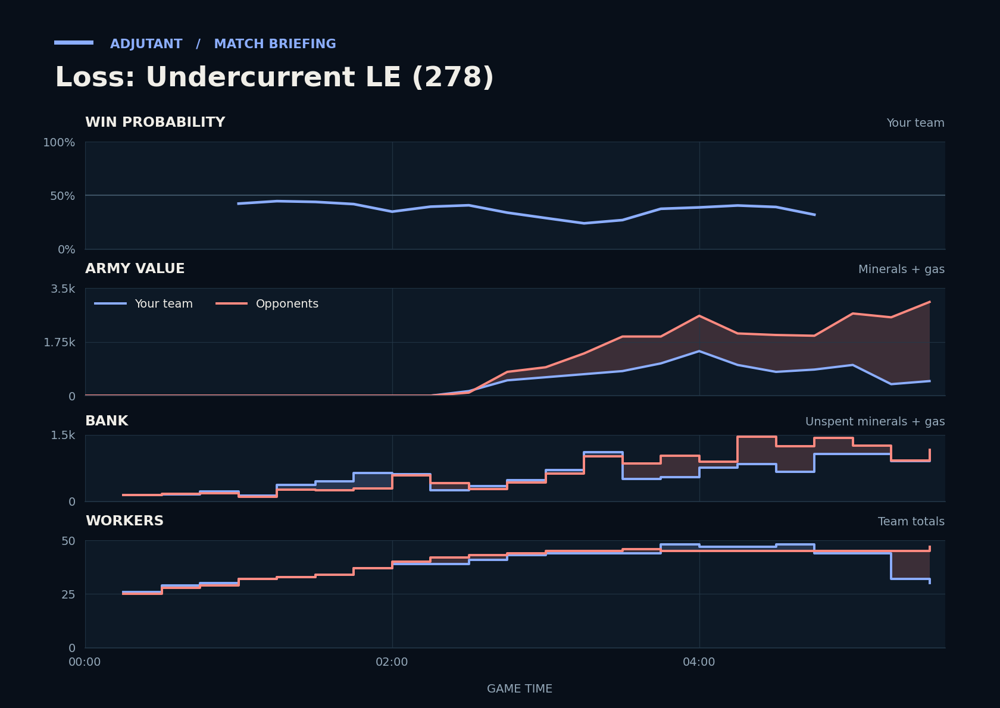

Loss: Undercurrent LE (278)
Provisional debrief. The full report (timeline, insights and analysis) is being generated.

Cached narration uses different analysis inputs (facts, engine notes, prompts or model settings). It has not been regenerated for this report.
**Loss.** You lost because you were outproduced: you went in with half the opponents' army at TakeTheTip's natural.
**Why**
- 2:17: Hidden: PerpetualSki's proxy Gateway and Kerplunk's Zergling flood built twice your army before the natural fight.
- 2:58–3:18: TakeTheTip was supply-blocked after an Overlord died, then went into the natural fight with 950 army.
- 3:49–5:33: PerpetualSki's Stalkers and Adept, plus Kerplunk's Zerglings, killed both players' workers at the natural; gg followed.
Current engine analysis: Loss. Review 1:30–3:15: army value: yours 0→700, theirs 0→1,375. The biggest fight came at 3:49–5:33 (4,475 lost, 2,375 killed).